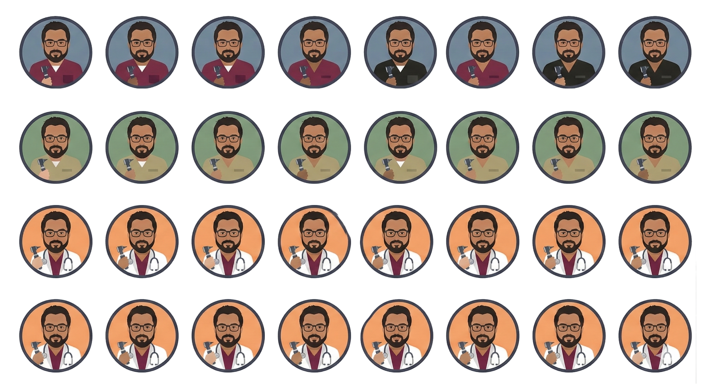
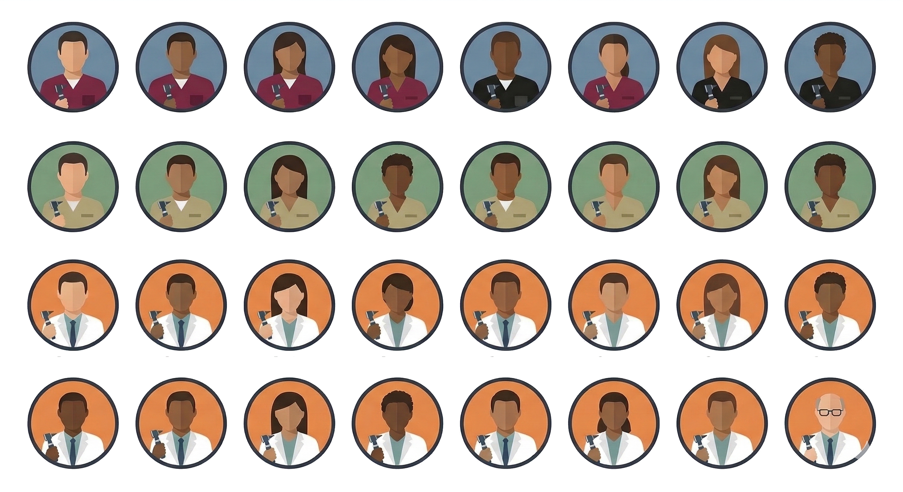
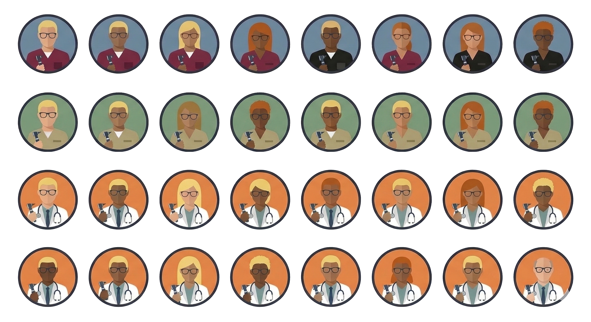
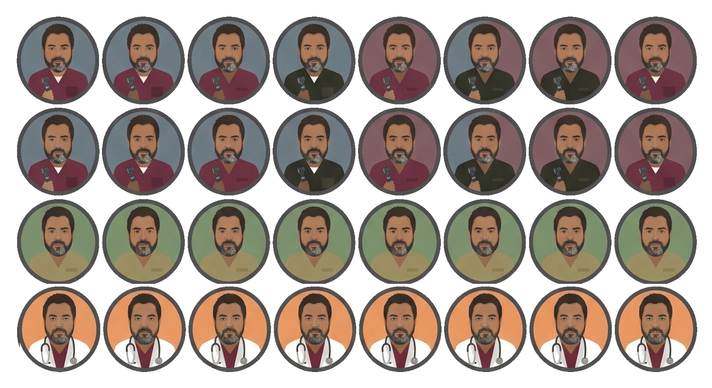

Proyecto desarrollado en la Universidad Austral de Chile. OtoReport nace de la necesidad clínica de digitalizar el registro de otoscopías y lavados de oído en atención primaria, sin depender de servicios en la nube.
OtoReport gestiona pacientes, captura y anota imágenes del oído, y genera PDFs clínicos listos para entregar. Diseñado para enfermería, audiología y atención primaria. Funciona sin internet en escritorio y móvil.

Imagen: profile_1.pngDesde el ingreso del paciente hasta el PDF firmado. Sin papeles, sin perder imágenes, sin depender de la nube.
Ficha clínica con nombre, fecha de nacimiento, contacto y notas. Búsqueda instantánea e historial completo de sesiones por paciente.
Hallazgos por oído: membrana timpánica, conducto auditivo externo. Reportes de otoscopía y de lavado de oído con comparación pre/post.
Imágenes desde otoscopio o cámara conectada. Recorte, zoom y dibujo encima de la imagen para señalar zonas de interés.
PDF con branding del centro (logo, nombre, dirección). Secciones reordenables por drag-and-drop, control del tamaño e imágenes por fila.
Catálogo visual con imágenes de referencia por categoría (timpánica / conducto). Funciona offline con caché local y sincroniza online.
Varios examinadores en un mismo equipo, cada uno con su configuración, branding y plantilla de hallazgos. Cambio de perfil en un clic.
Cada paciente con su ficha completa y todas sus sesiones de otoscopía y lavado en línea de tiempo. Validación de RUT chileno y autoguardado del reporte mientras escribes.

Imagen: profile_2.pngCaptura desde el otoscopio, recorta, ajusta y dibuja directamente sobre la imagen para resaltar perforaciones, cerumen, edema u otorrea. Múltiples imágenes por oído, asociadas a la sesión.

Imagen: profile_3.pngLogo y datos de tu centro, secciones reordenables, control del tamaño de imagen y cantidad por fila. Todo configurable por perfil. El PDF queda listo para entregar al paciente o adjuntar a la ficha.

Imagen: profile_4.pngMismo flujo, mismos datos en local. Empacado con Tauri 2 para builds nativas livianas.
Sin builds para Debian/Ubuntu (.deb) — usa el AppImage en cualquier distro Linux.
Instaladores actualizados directamente desde GitHub Releases.